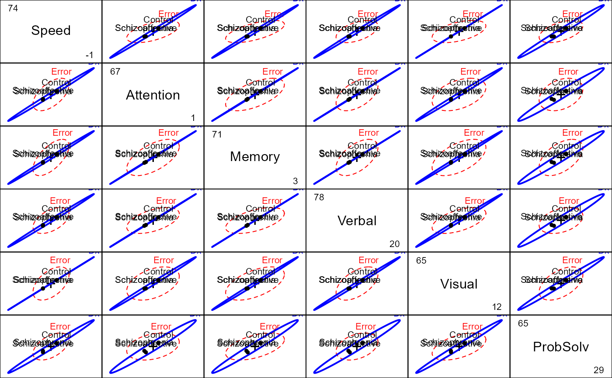
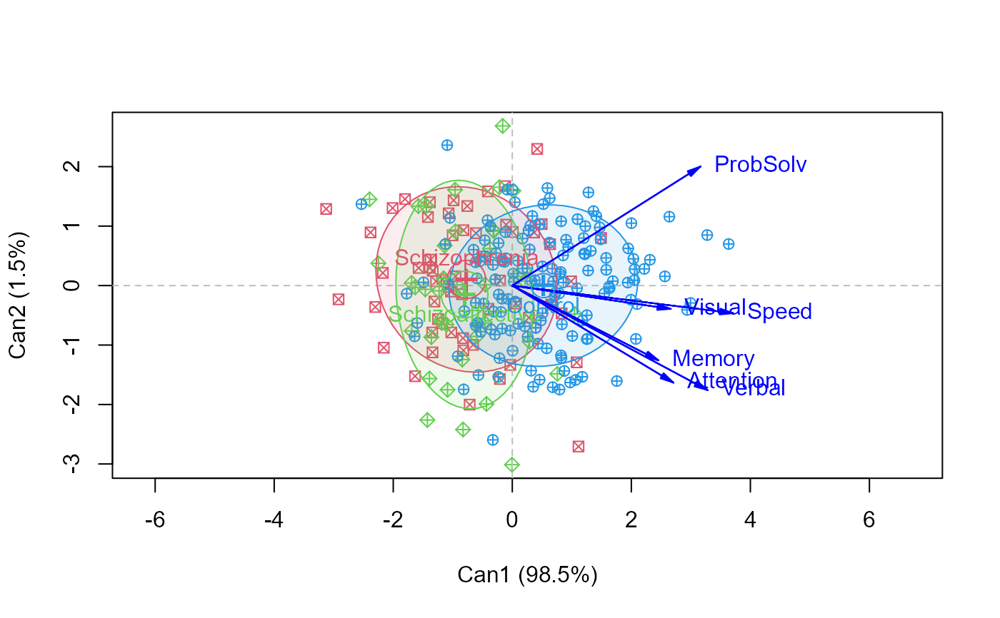

The primary purpose of the study (Hartman, 2016, Heinrichs et al. (2015)) was to evaluate patterns and levels of performance on neurocognitive measures among individuals with schizophrenia and schizoaffective disorder using a well-validated, comprehensive neurocognitive battery specifically designed for individuals with psychosis (Heinrichs et al. (2008))
Format
A data frame with 242 observations on the following 10 variables.
DxDiagnostic group, a factor with levels
SchizophreniaSchizoaffectiveControlSpeedSpeed of processing domain T score, a numeric vector
AttentionAttention/Vigilance Domain T score, a numeric vector
MemoryWorking memory a numeric vector
VerbalVerbal Learning Domain T score, a numeric vector
VisualVisual Learning Domain T score, a numeric vector
ProbSolvReasoning/Problem Solving Domain T score, a numeric vector
SocialCogSocial Cognition Domain T score, a numeric vector
AgeSubject age, a numeric vector
SexSubject gender, a factor with levels
FemaleMale
Source
Hartman, L. I. (2016). Schizophrenia and Schizoaffective Disorder: One Condition or Two? Unpublished PhD dissertation, York University.
Heinrichs, R.W., Pinnock, F., Muharib, E., Hartman, L.I., Goldberg, J.O., &
McDermid Vaz, S. (2015). Neurocognitive normality in schizophrenia
revisited.
Schizophrenia Research: Cognition, 2 (4), 227-232.
doi: 10.1016/j.scog.2015.09.001
Details
The main interest was in determining how well these measures distinguished among all groups and whether there were variables that distinguished between the schizophrenia and schizoaffective groups.
Neurocognitive function was assessed using the MATRICS Consensus Cognitive Battery (MCCB; Nuechterlein et al., 2008). The MCCB consists of 10 individually administered tests that measure cognitive performance in seven domains: speed of processing, attention/vigilance, working memory, verbal learning, visual learning, reasoning and problem solving, and social cognition.
The clinical sample comprised 116 male and female patients who met the following criteria: 1) a diagnosis of schizophrenia (n = 70) or schizoaffective disorder (n = 46) confirmed by the Structured Clinical Interview for DSM-IV-TR Axis I Disorders; 2) outpatient status; 3) a history free of developmental or learning disability; 4) age 18-65; 5) a history free of neurological or endocrine disorder; and 6) no concurrent DSM-IV-TR diagnosis of substance use disorder.
Non-psychiatric control participants (n = 146) were screened for medical and psychiatric illness and history of substance abuse. Patients were recruited from three outpatient clinics in Hamilton, Ontario, Canada. Control participants were recruited through local newspaper and online classified advertisements for paid research participation.
References
Heinrichs, R. W., Ammari, N., McDermid Vaz, S. & Miles, A. (2008). Are schizophrenia and schizoaffective disorder neuropsychologically distinguishable? Schizophrenia Research, 99, 149-154.
Nuechterlein K.H., Green M.F., Kern R.S., Baade L.E., Barch D., Cohen J., Essock S., Fenton W.S., Frese F.J., Gold J.M., Goldberg T., Heaton R., Keefe R.S.E., Kraemer H., Mesholam-Gately R., Seidman L.J., Stover E., Weinberger D.R., Young A.S., Zalcman S., Marder S.R. (2008) The MATRICS Consensus Cognitive Battery, Part 1: Test selection, reliability, and validity. American Journal of Psychiatry, 165 (2), 203-213. https://pubmed.ncbi.nlm.nih.gov/18172019/.
Examples
library(car)
data(NeuroCog)
NC.mlm <- lm(cbind( Speed, Attention, Memory, Verbal, Visual, ProbSolv) ~ Dx,
data=NeuroCog)
Anova(NC.mlm)
#>
#> Type II MANOVA Tests: Pillai test statistic
#> Df test stat approx F num Df den Df Pr(>F)
#> Dx 2 0.2992 6.8902 12 470 1.562e-11 ***
#> ---
#> Signif. codes: 0 '***' 0.001 '**' 0.01 '*' 0.05 '.' 0.1 ' ' 1
# test contrasts
contrasts(NeuroCog$Dx)
#> [,1] [,2]
#> Schizophrenia -0.5 1
#> Schizoaffective -0.5 -1
#> Control 1.0 0
print(linearHypothesis(NC.mlm, "Dx1"), SSP=FALSE)
#>
#> Multivariate Tests:
#> Df test stat approx F num Df den Df Pr(>F)
#> Pillai 1 0.2890821 15.85866 6 234 2.8146e-15 ***
#> Wilks 1 0.7109179 15.85866 6 234 2.8146e-15 ***
#> Hotelling-Lawley 1 0.4066322 15.85866 6 234 2.8146e-15 ***
#> Roy 1 0.4066322 15.85866 6 234 2.8146e-15 ***
#> ---
#> Signif. codes: 0 '***' 0.001 '**' 0.01 '*' 0.05 '.' 0.1 ' ' 1
print(linearHypothesis(NC.mlm, "Dx2"), SSP=FALSE)
#>
#> Multivariate Tests:
#> Df test stat approx F num Df den Df Pr(>F)
#> Pillai 1 0.0063518 0.2493025 6 234 0.95924
#> Wilks 1 0.9936482 0.2493025 6 234 0.95924
#> Hotelling-Lawley 1 0.0063924 0.2493025 6 234 0.95924
#> Roy 1 0.0063924 0.2493025 6 234 0.95924
# pairwise HE plots
pairs(NC.mlm, var.cex=1.5)

# canonical discriminant analysis
if (require(candisc)) {
NC.can <- candisc(NC.mlm)
NC.can
plot(NC.can, ellipse=TRUE, rev.axes=c(TRUE,FALSE), pch=c(7,9,10))
}
#> Vector scale factor set to 4.128
